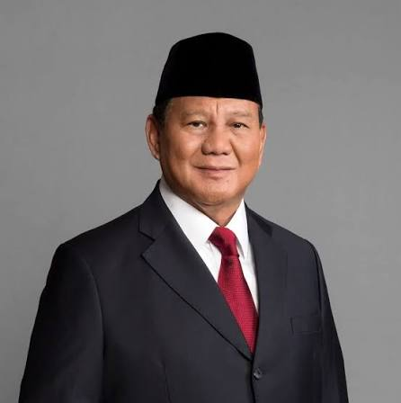
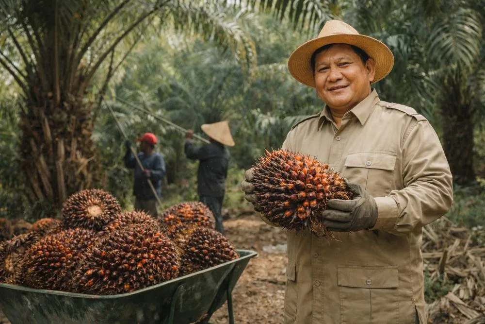

Kesuksesan hadir dari keberanian memulai langkah pertama, terus bertahan hingga tugas selesai, dan bangkit kembali setelah jatuh berkali-kali.

Jenderal TNI (Purn.) H. Prabowo Subianto Djojohadikusumo.

Dalam berbagai kesempatan, Prabowo Subianto selalu menekankan pentingnya program hilirisasi industri kelapa sawit agar nilai tambah dari komoditas unggulan ini tidak hanya dinikmati oleh korporasi besar, melainkan juga mampu mengalir langsung ke kantong-kantong petani swadaya melalui perbaikan tata kelola, penyediaan pupuk bersubsidi yang tepat sasaran, dan penguatan kelembagaan koperasi kelapa sawit di seluruh pelosok negeri.
Menjadi pemimpin yang visioner, berintegritas, dan mampu membawa Indonesia menuju kemajuan yang berkelanjutan.
Meningkatkan kesejahteraan rakyat melalui pembangunan ekonomi yang inklusif, penguatan sektor pertanian, dan pengembangan sumber daya manusia.
Melaksanakan program hilirisasi industri kelapa sawit, memperkuat koperasi petani, dan menyediakan akses pupuk bersubsidi yang tepat sasaran.